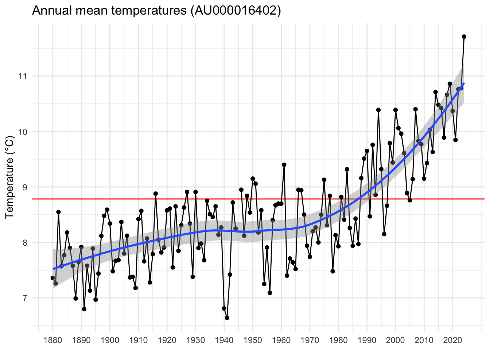
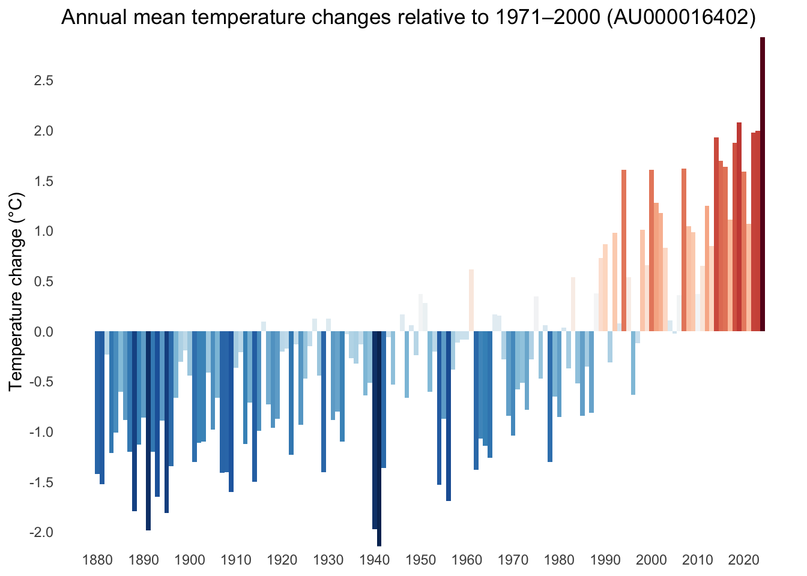

library(readr)
read_station = function(id) {
base = "https://data.giss.nasa.gov/"
# first trigger the creation of the CSV file
close(url(
sprintf("%scgi-bin/gistemp/stdata_show_v4.cgi?id=%s&ds=14&dt=1", base, id),
open="r"
))
# then import the CSV file
read_delim(
sprintf("%stmp/gistemp/STATIONS/tmp_%s_14_0_1/station.csv", base, id),
na="999.90"
)
}Warming stripes with R
R
Visualization
Warming stripes are a popular way to represent average temperature changes in a particular location over time. In this post, I show how to generate these visualizations using R.
Background
Warming stripes are a popular way to represent temperature changes in a particular location over time. They are typically used to illustrate climate change caused by human activity (most notably by CO₂ emissions). The #ShowYourStripes website has warming stripes (in four variations) for selected regions, but it is much more interesting and fun to generate these plots with R – this is what the remainder of this post is about.
Data
We are going to use NASA GISS Surface Temperature Analysis data (short GISTEMP), which contains surface temperature readings of almost 28,000 measurement stations across the globe. Each station provides at least 20 years of temperature data.
Let’s choose my home town Graz, Austria as an example location for this post. We need to find out the corresponding closest weather station ID, which can be searched on the GISTEMP station data website. We can either hover over a red spot on the globe (which is a bit difficult to navigate) or use the search box at the bottom of the page. There, we can enter a name or coordinates and click “Search”, which will generate a list of possible matches. In either case, the station ID for Graz is AU000016402 (the first row in the search result list). Clicking on the station name opens a new page with more details, and at the bottom of that page we can download the temperature data as a CSV file.
I wrote a short R function read_station() to make this process a little more convenient. All we need to know is the station ID and it will return the temperature data as a tibble:
Note
The CSV files are not permanently available, so I trigger their creation with the url() function before downloading.
Let’s call this function to get our data:
# get station ID at https://data.giss.nasa.gov/gistemp/station_data_v4_globe/
id = "AU000016402"
(df = read_station(id))# A tibble: 145 × 18
YEAR JAN FEB MAR APR MAY JUN JUL AUG SEP OCT NOV DEC
<dbl> <dbl> <dbl> <dbl> <dbl> <dbl> <dbl> <dbl> <dbl> <dbl> <dbl> <dbl> <dbl>
1 1880 -5.58 -3.58 2.52 11.1 11.8 15.6 19.3 16.3 14.1 9.42 3.02 1.52
2 1881 -6.48 -1.88 4.32 6.42 12.4 16.0 18.9 17.7 12.7 5.82 1.32 -0.88
3 1882 -1.68 0.02 8.52 8.12 13.8 15.1 18.3 16.3 13.7 9.92 3.02 0.12
4 1883 -3.28 0.42 -0.78 6.52 13.2 17.2 17.6 17.0 13.5 8.92 2.02 -2.49
5 1884 -1.49 0.21 5.11 7.81 13.8 14.1 19.1 16.8 13.9 7.31 0.61 -0.79
6 1885 -4.59 0.01 5.01 9.71 11.5 17.1 19.4 16.5 14.3 8.11 3.41 -3.29
7 1886 -2.89 -0.39 0.21 9.31 13.2 15.9 18.3 17.5 15.3 9.71 3.41 0.21
8 1887 -3.49 -3.49 1.41 8.11 12.3 16.4 19.7 17.2 14.8 6.21 3.11 -2.29
9 1888 -4.59 -2.69 2.31 7.21 13.5 17.2 16.5 17.7 14.0 6.41 0.21 -1.49
10 1889 -3.99 -2.38 1.91 8.01 15.5 18.5 17.7 16.6 11.6 9.81 1.71 -4.29
# ℹ 135 more rows
# ℹ 5 more variables: `D-J-F` <dbl>, `M-A-M` <dbl>, `J-J-A` <dbl>,
# `S-O-N` <dbl>, metANN <dbl>The structure is pretty straightforward. A particular row corresponds to a year defined in the YEAR column, and the annual average temperature is contained in the metANN column. These are the only two columns we are going to use.
Line chart
Let’s start with a simple line chart showing annual temperatures over time. We will need the mean temperature between 1971 and 2000 for various plots, so let’s put that value into its own variable tmean:
(tmean = mean(subset(df, YEAR >= 1971 & YEAR <= 2000)$metANN))[1] 8.934We will also need the first and last available years (mainly for nice tick labels):
start = df$YEAR[1]
stop = df$YEAR[nrow(df)]We are now ready to create the time series plot:
library(ggplot2)
theme_set(theme_minimal())
ggplot(data=df, mapping=aes(x=YEAR, y=metANN)) +
geom_hline(yintercept=tmean, color="red") +
geom_line() +
geom_point() +
geom_smooth() +
scale_x_continuous(breaks=seq(start, stop, 10)) +
labs(x=NULL, y="Temperature (°C)", title=sprintf("Annual mean temperatures (%s)", id))
The horizontal red line shows the mean temperature between 1971 and 2000, and the blue line is a local polynomial regression smoother which clearly indicates how quickly temperatures are rising for this location.
Warming stripes
Warming stripes visualize the same data in a different way. Instead of mapping annual temperatures to height on the y-axis, they color-code temperature to create a patch of colored stripes.
We are going to use the diverging 11-class Red/Blue colormap available in {RColorBrewer}.
library(RColorBrewer)The plot is comprised of columns of constant height using geom_col(width=1), mapping their color fill to temperatures metANN. To set the colormap, we use scale_fill_gradientn() (note the n at the end of the function name, which creates a custom n-color gradient from our 11-class Red/Blue colormap) using the colormap generated with RColorBrewer::brewer.pal(). We have to reverse it to associate colder temperatures with blue and warmer temperatures with red.
ggplot(data=df, mapping=aes(x=YEAR, y=1, fill=metANN)) +
geom_col(width=1) +
scale_x_continuous(breaks=seq(start, stop, 10), expand=c(0, 0)) +
scale_y_continuous(expand=c(0, 0)) +
scale_fill_gradientn(colors=rev(brewer.pal(11, name="RdBu")), na.value="gray") +
labs(x=NULL, y=NULL, title=sprintf("Annual mean temperatures (%s)", id), fill="T (°C)") +
theme(axis.text.y=element_blank(), panel.grid=element_blank())
Note that there is one missing temperature value for 1945, which is displayed in gray.
Enhanced warming stripes
The beauty of warming stripes is that they convey important information without containing too many (distracting) details. However, if we wanted to show additional quantitative data, we can
- map the height of each bar to the corresponding temperature,
- and include axis labels, tick labels, as well as a legend.
In addition, it might be interesting to plot temperature differences relative to the mean between 1971 and 2000. Here’s how to create this alternative version of the image:
tmin = round(min(df$metANN - tmean, na.rm=TRUE))
tmax = round(max(df$metANN - tmean, na.rm=TRUE))
ggplot(data=df, mapping=aes(x=YEAR, y=metANN - tmean, fill=metANN - tmean)) +
geom_col(width=1) +
scale_x_continuous(breaks=seq(start, stop, 10)) +
scale_y_continuous(breaks=seq(tmin, tmax, 0.5), expand=c(0, 0)) +
scale_fill_gradientn(colors=rev(brewer.pal(11, name="RdBu")), na.value="gray") +
labs(
x=NULL,
y="Temperature change (°C)",
title=sprintf("Annual mean temperature changes relative to 1971–2000 (%s)", id)
) +
theme(panel.grid=element_blank(), legend.position="none")
In my opinion, this representation is even more dramatic and shows, for example, that current temperatures in Graz, Austria, are already at least 1.5°C higher than the average between 1971 and 2000.